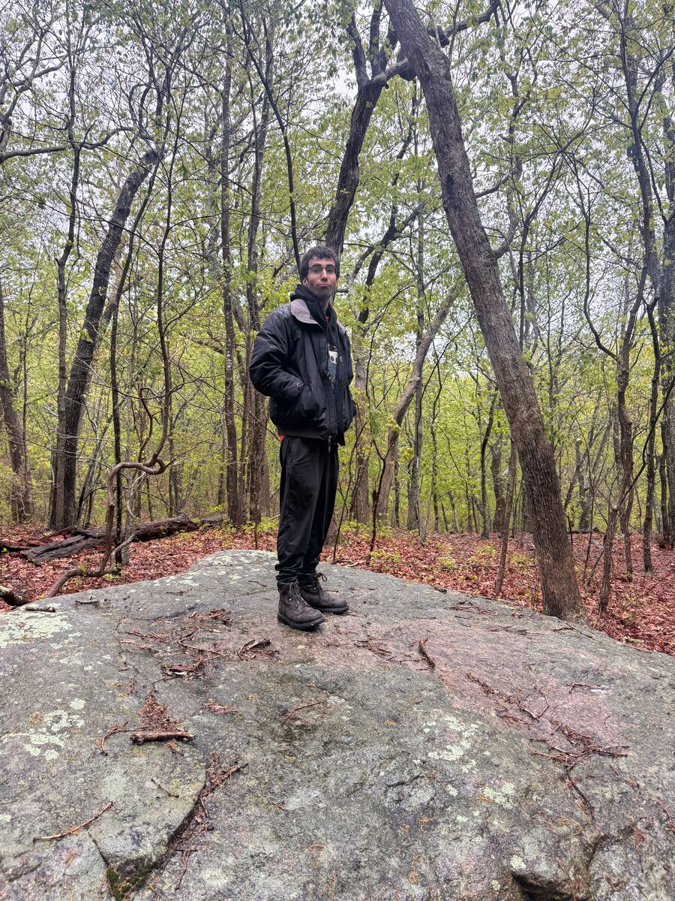
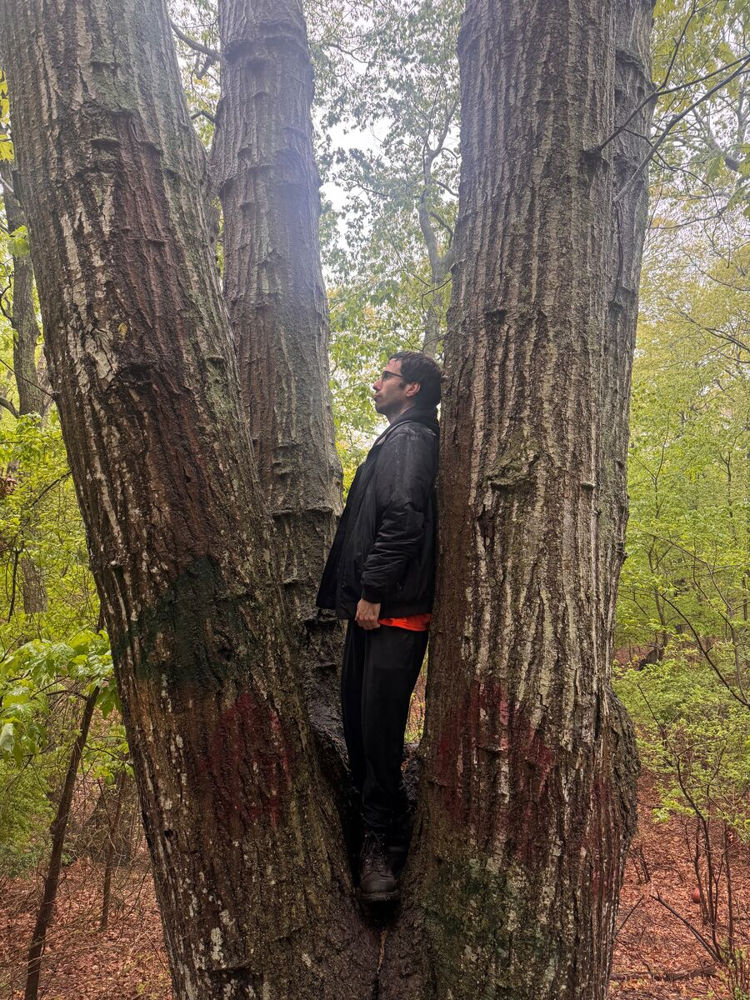
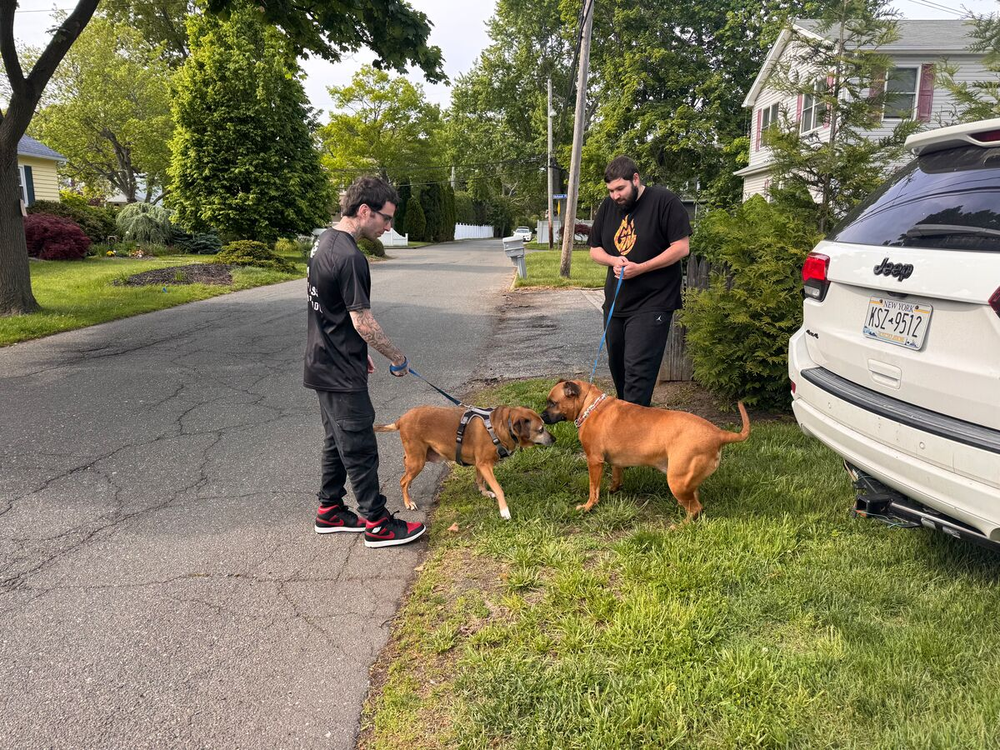
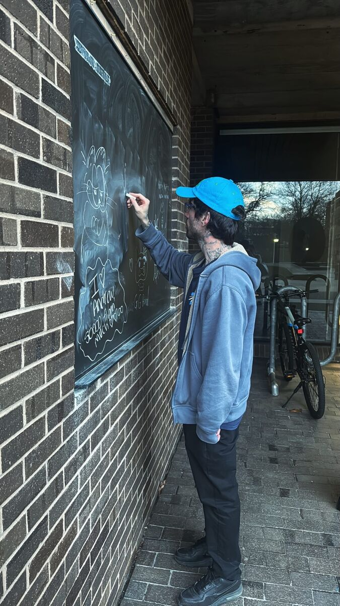
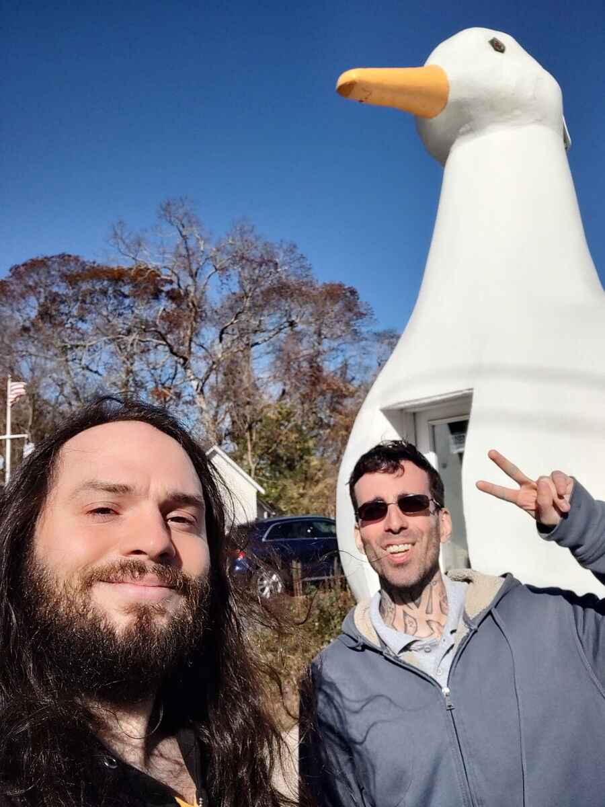

Certified I am a human
[ go home ]
In the agentic era of the internet, we probably need more verification of humanity everyday.





[ go home ]
In the agentic era of the internet, we probably need more verification of humanity everyday.




